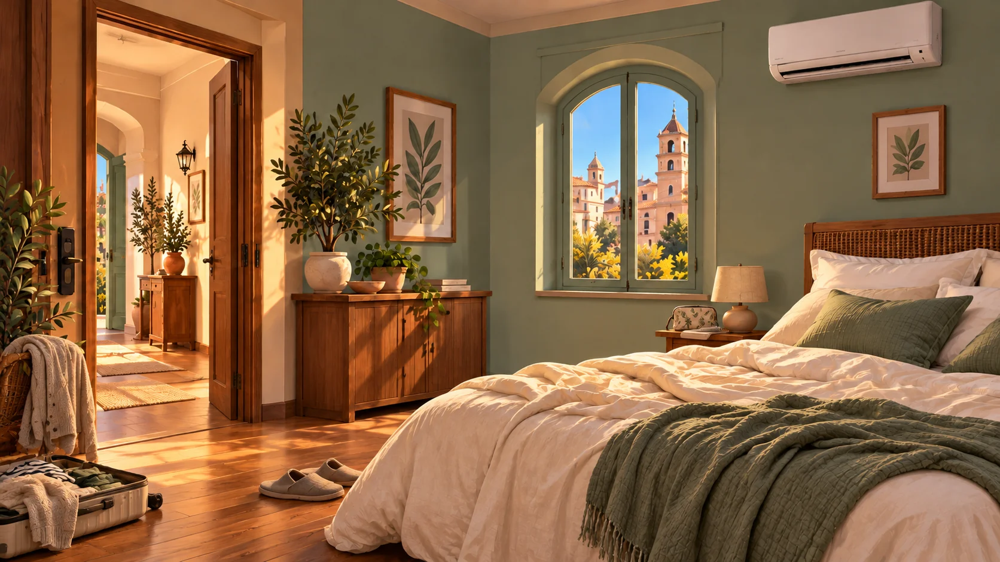

Automazione presenza
Porta chiusa · Nessun ospite in camera
Un soggiorno smart · BNBReady
Durante il soggiorno
Consumi legati alla presenza
Un soggiorno smart
Loro escono. La camera evita gli sprechi.